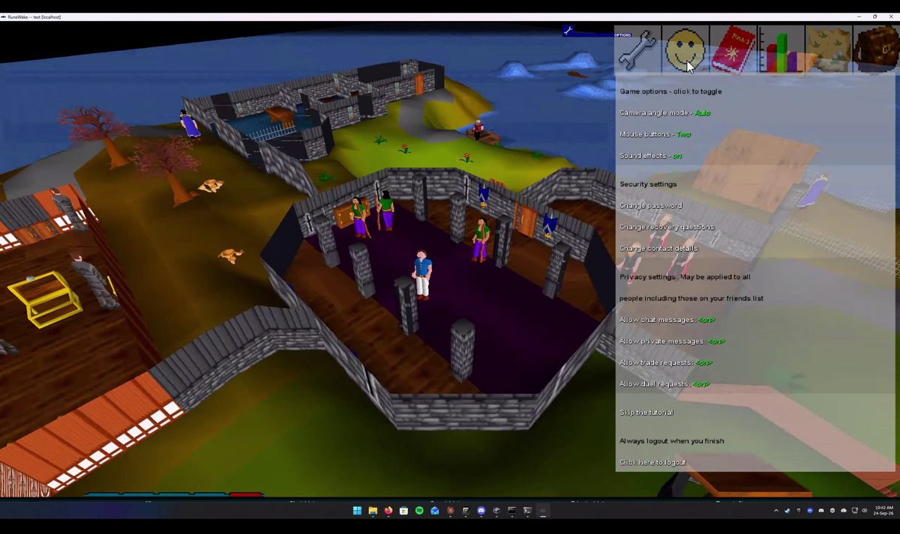
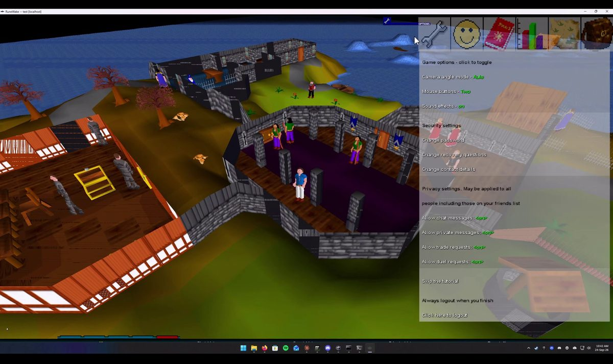

Faithful by default
Classic rendering remains the baseline. The authentic interface keeps its inherited sprites and colours while the modern path is available when you want it.
RuneWake is a community-driven revival of RuneScape Classic: a faithful game foundation wrapped in a modern, responsive client and a server platform made to be configured, hosted, and extended in the open.

RuneWake keeps the classic game's readable, tactile rhythm while making the surrounding technology easier to run, inspect, and improve.
Classic rendering remains the baseline. The authentic interface keeps its inherited sprites and colours while the modern path is available when you want it.
Configure game modes, rates, worlds, clans, auctions, holidays, and more from server configuration instead of rebuilding the client for every idea.
Resolution-aware UI scaling, a minimap you can actually read, premium dark-fantasy theme tokens, and a launcher that keeps the client current.

The client is being modernised without throwing away the character of the original. Panels scale with the window, the map has a readable frame and zoom, and the optional theme gives the interface a darker, warmer edge.
Whether you came to play, host a world, or make the client better, the repository has a route in.
Build the client, connect to a local server, or use the static browser to find a community world.
Read the getting started →Use the simple Windows path, Docker, MariaDB, or the Makefile helpers to bring a server online.
See hosting guides →Follow the roadmap, read the audits, pick an issue, and send a focused change with its verification notes.
Contribute to the fork →“A revival is not a screenshot. It is a world that still boots, still changes, and still gives people something to build together.”RuneWake project direction
Modernisation notes, visual test coverage, asset provenance, and dependency decisions are documented in the open.